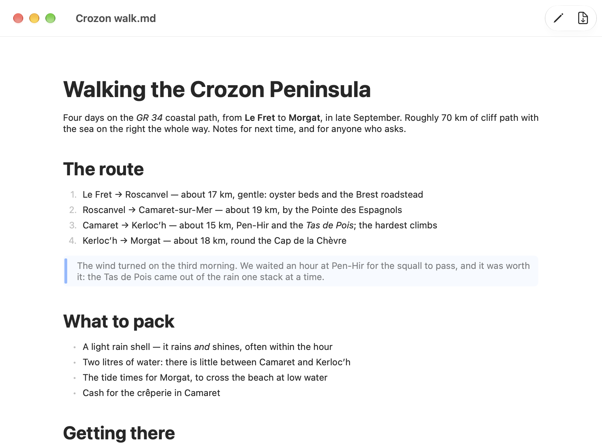
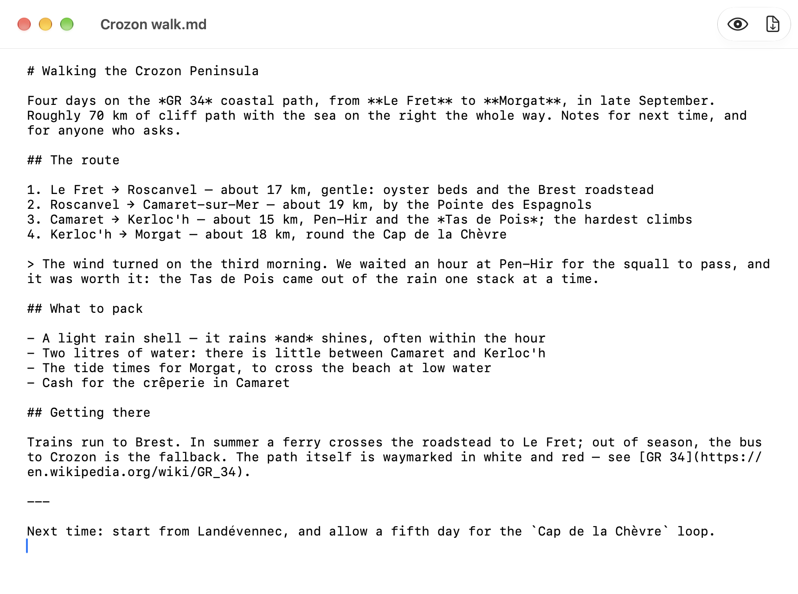
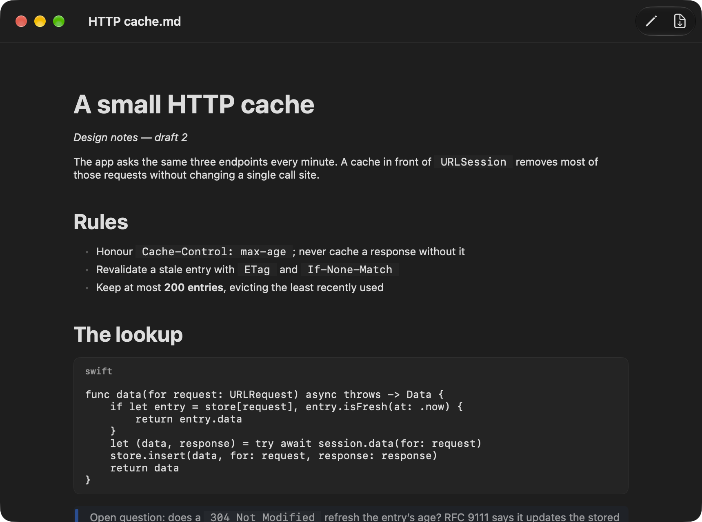

The Markdown, as you wrote it
⇧⌘P switches to the editor: the source in a monospaced font, nothing hidden, nothing rewritten. Switch back to read it rendered.
Write in Markdown, read it rendered, export it to PDF. Your documents stay plain .md files on your disk — what you save is what you wrote.
Free and open source (MIT) · macOS 26.4 or later · signed and notarized · English and French

Opens and saves .md, .markdown and .mdown files in UTF-8, byte for byte. No library, no database, no lock-in.
A rendered view and an editor, one click or ⇧⌘P apart.
⇧⌘E exports on the paper size of your print settings. Page breaks fall between blocks, never through a line.
Follows the system appearance, and the system language: English or French.
SwiftUI and Apple’s swift-markdown parser. Sandboxed: it reaches only the files you open.
MIT licence, source on GitHub, built with one make command.
⇧⌘P switches to the editor: the source in a monospaced font, nothing hidden, nothing rewritten. Switch back to read it rendered.

quotation and ** bold markers" loading="lazy">Inline code, and code blocks labelled with their language, in Dark Mode as in light.

Open the .dmg, drag PlumeMD onto Applications. It is signed with a Developer ID and notarized by Apple: it opens with a double click.